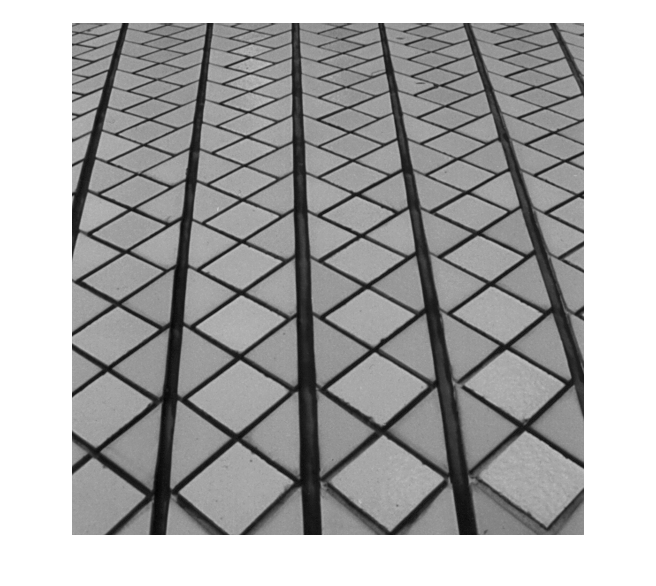
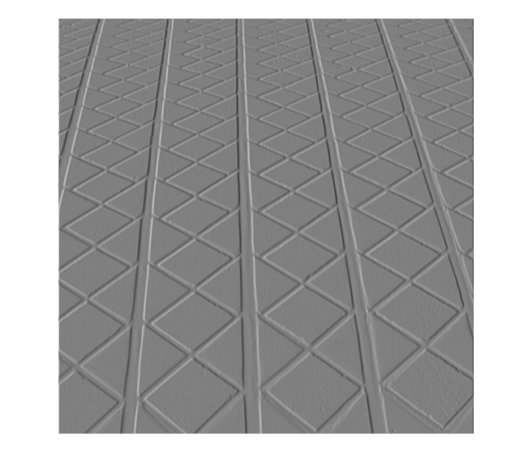
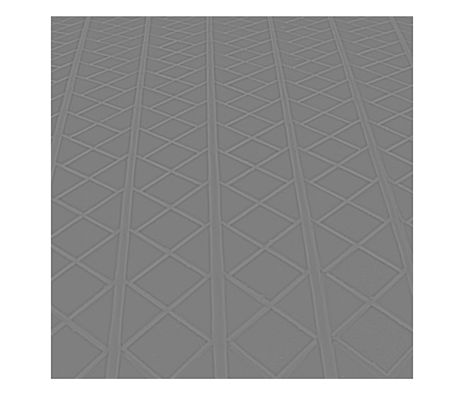

Contents
% % 4a. Praktikum - Binomial_Ableitung+Laplace % ------------------------------------------ % Legen Sie in Ihrem Arbeitsverzeichnis ein Unterverzeichnis an: % 4a.Binomial_Ableitung+Laplace % % Kopieren Sie das Notebook aus ../allg dorthin und benennen Sie es um in % 4a.Binomial_Ableitung+Laplace_Gruppe-XY.m % Legen Sie dort ein Unterverzeichnis 'Ergebnisse/' an. % % Führen Sie die Arbeitsschritte aus, an denen ??? als Platzhalter steht % und speichern Sie das Notebook am Ende ab (zwischendurch auch % Sicherungskopien). % % Die Aufgabenstellung sowie Hinweise finden Sie im % DBV-Blatt4_Binomialfilter+Punkttransformationen.pdf % ------------------------------------------------------------------------
Initialisierung:
coder = 'Cinepak'; %'None', 'Cinepak', 'Indeo3' addpath( '../Packages_Matlab' ); addpath( '../allg/' ); addpath( '../allg/Bilder' ); %--------------------------------------------------------------------------
Bild einlesen:
g = imread( 'Bilder/Tile-gray.pgm' ); figure( 1 ), imshow( g ); %--------------------------------------------------------------------------
Ableitung in x-Richtung:
Leiten Sie das Bild in x-Richtung mit einem 3x3-Binomialfilter ab. Dazu steht die Funktion Binomialfilter() bereit.
[hdx, nfactor] = Binomialfilter( [3,0,3,1], 0 ); gdx = nfactor * imfilter( double( g ), double( hdx ) ); % Stellen Sie das abgeleitete Bild mit dem Nullpunkt beim mittleren % Grauwert der Grauwertskala dar und speichern es ab: figure( 2 ), imshow( uint8( gdx + 127 ) ); imwrite( uint8( gdx + 127 ), 'Ergebnisse/Tile-gray_dx.jpg', 'jpg' ); % Frage: Beschreiben Sie das Ergebnis bzgl. Kanten und Flächen: % A: Die weißen bzw. schwarzen Kanten im Ergebnisbild entsprechen den % Grauwertübergängen von Dunkel nach Hell bzw. von Hell nach Dunkel im % Ausgangsbild (Fugen der Kacheln). An diesen Kanten ist im Ergebnisbild % die gerichtete Ableitung in x-Richtung besonders gut zu erkennen % (vertikale Fugen). Da die Flächen (die Kacheln selbst) im Ausgangsbild % keine nennenswerten Grauwertübergänge aufweisen (außer bei kleinen % Einschlüssen am unteren Bildrand) sind diese im Ergebnisbild durch % mittlere Grauwerte dargestellt. %--------------------------------------------------------------------------
Richtungsableitung:
Leiten Sie das Bild in Richtung des Vektors n=(x,y)'=(2,1)', also etwa in 26-Grad-Richtung ab: Verwenden Sie dabei 3x3-Binomialfilter:
phi = atan2( 1,2 ); hdx = Binomialfilter( [3,0,3,1], 0 ); [hdy, nfactor] = Binomialfilter( [3,1,3,0], 0 ); hdn = cos( phi ) .* hdx + sin( phi ) .* hdy; gdn = nfactor * imfilter( double( g ), double( hdn ) ); % Stellen Sie das abgeleitete Bild mit dem Nullpunkt beim mittleren % Grauwert der Grauwertskala dar und speichern es ab: figure( 3 ), imshow( uint8( gdn + 127 ) ); imwrite( uint8( gdn + 127 ), 'Ergebnisse/Tile-gray_dn.jpg', 'jpg' ); % Frage: Beschreiben Sie den Unterschied im Ergebnis zur Ableitung % in x-Richtung: % A: Die schräg verlaufenden Fugen werden im zweiten Ergebnisbild teilweise % auch mit mittleren und nicht nur mit hohen oder niedirgen Grauwerten wie % bei der Ableitung in x-Richtung dargestellt. % Frage: Warum ist das so? % A: Die Fugen, die senkrecht zur Ableitungsrichtung stehen werden mit % hohen bzw. niedrigen Grauwerten dargestellt (je nach Grauwertübergang). % Bei Fugen, die fast parallel zur Ableitungsrichtung verlaufen, treten % keine nennenswerten Grauwertübergänge auf. Diese Fugen werden im % Ergebnisbild ähnlich wie die Flächen mit einem mittleren Grauwert % dargestellt. %--------------------------------------------------------------------------

Laplace mit Binomialfilter:
Erzeugen Sie den 7x7-Binomial-Laplace-Filter. Wie lautet der Operator? Filtern Sie das Bild damit:
hblabx = Binomialfilter( [7,2,7,0], 0 ); [hblaby, nfactor] = Binomialfilter( [7,0,7,2], 0 ); hblap = 0.5 * ( hblabx + hblaby ); gblap = nfactor * imfilter( double( g ), double( hblap ) ); % Stellen Sie das abgeleitete Bild mit dem Nullpunkt beim mittleren % Grauwert der Grauwertskala dar und speichern es ab: figure( 4 ), imshow( uint8( gblap + 127 ) ); imwrite( uint8( gblap + 127 ), 'Ergebnisse/Tile-gray_binlaplace.jpg', 'jpg' ); % Frage: Beschreiben Sie den Unterschied im Ergebnis zur Ableitung % in x-Richtung: % A: Die Kanten im Ergebnisbild werden alle einheitlich (mit den gleichen % Grauwerten) dargestellt. Die Intensität der Kanten ist allerdings % geringer als bei der Ableitung in x-Richtung. % Frage: Warum ist das so? % A: Der Laplace-Operator ist rotationsinvariant. Das bedeutet, dass die % Ableitungen in alle Richtungen erfolgen. Dadurch besitzen die Kanten im % Ergebnisbild alle den gleichen Grauwert. Da der Laplace-Operator sowohl % in x- als auch y-Richtung zweimal ableitet, wird die Intensität der % Kanten geringer und es entstehen pro Kante im Ausgangsbild zwei Übergänge % im Ergebnisbild (besonders gut bei den vertikalen Kanten zu erkennen). %--------------------------------------------------------------------------
Frequenzgang von Binomialfiltern:
Bestimmen Sie die Maskenbreite eines eindimensional Binomialfilters, bei der dieser als Tiefpaß nur noch "das halbe" Spektrum durchläßt. Hinweise: - Berechnung des Betragsspektrums - Beurteilung und Begründung mittels "Anschauen".
% Berechnung des Betragsspektrums fg = fftshift( fft2( g ) ); afg = abs( fg ); afg = afg / max( max ( afg ) ) * 255; figure( 5 ), imshow( afg ); % Frequenzfaktor legt die Breite des TP fest [0;1] freqfacx = 0.5; % Die Hälfte der Frequenzen in x-Richtung freqfacy = 0.5; % Die Hälfte der Frequenzen in y-Richtung % Berechnung der Frequenzwertdeltas in x- und y-Richtung mit der Annahme: % Signallänge = Anzahl der Pixel und N = Anzahl der Pixel -> deltax = 1 dux = 1 / size( g,2 ); duy = 1 / size( g,1 ); % Berechnung der Größe der Operatormasken in x- und y-Richtung: % Maximal darstellbare Frequenz = Anzahl der Pixel * 0.5 sizex = round( 1 / ( ( freqfacx * 0.5 * size( g,2 ) ) * dux ) ) sizey = round( 1 / ( ( freqfacy * 0.5 * size( g,1 ) ) * duy ) ) % Filterung des Bildes mit einem entsprechenden Binominalfilter [h, nfactor] = Binomialfilter( [sizex,0,sizey,0], 0 ); gsam = nfactor * imfilter( double( g ), double( h ) ); figure( 6 ), imshow( uint8( gsam ) ); % Berechnung des gefilterten Betragsspektrums fg = fftshift( fft2( uint8( gsam ) ) ); afg = abs( fg ); afg = afg / max( max ( afg ) ) * 255; figure( 7 ), imshow( afg ); % Das Spektrum nach der Filterung hat bis auf die Stauchung in x- und % y-Richtung die gleiche Form (siehe Spektrum Ausgangsbild). Auffällig sind % allerdings die weißen Linien in x- und y-Richtung ausgehen vom Nullpunkt.
sizex =
4
sizey =
4


'fertig'
ans = fertig